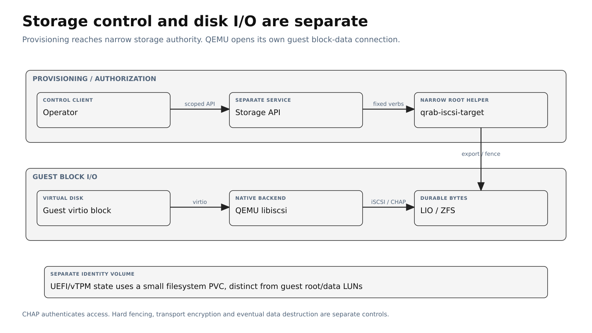
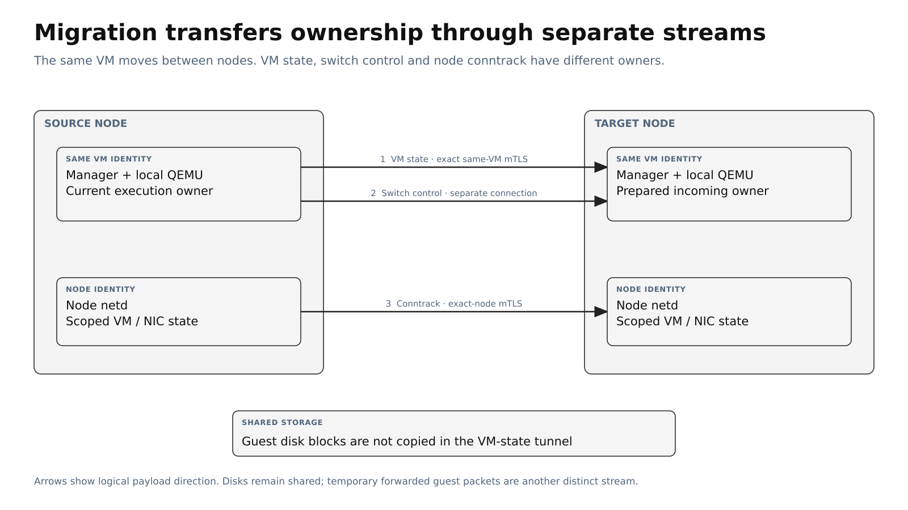

Operate the boundaries
Operate the boundaries
Failure-first workshop / qrab and OpenStack
Evidence: S03, S04, S131 / 13 · operations

OpenStack: simple boundary overview

qrab: simple target boundary overview
Operate the boundaries
A symptom is not the owner
| Symptom | First boundary to inspect |
|---|---|
| Guest is off; console still reachable | Manager power state versus Pod lifecycle |
| Guest packets fail; VM probes pass | NIC anchor / Cilium / route path |
| New disk operation fails; guest I/O works | Storage control API versus data connection |
| Deletion waits | The finalizer that still owns cleanup |
Evidence: S03, S04, S08, S09, S134 / 13 · operations
Operate the boundaries
Scenario: the old node vanished
- Identify the exact old VM/Pod UID and disk generation.
- Keep unknown writer ownership visible.
- Require clean release or a completed backend fence before replacement.
Evidence: S05, S13, S145 / 13 · operations

Storage: simple control and I/O overview

Migration: simple ownership and stream overview
Operate the boundaries
Scenario: the user logs in but cannot act
- Distinguish valid human identity from VM action role.
- Check exact service SVID admission independently.
- Check API RBAC/admission only for the declarative API path.
Evidence: S16, S18, S19, S208 / 13 · operations
Operate the boundaries
Deletion is not one operation
| Object | Relevant authority |
|---|---|
| Control Pods / config / credential Secrets | Proven Kubernetes ownership + safe drain |
| State PVC | Exact launch/established owner; otherwise retained |
| Access groups / guest registrations | Their recorded lifecycle owners |
| Guest disk bytes | Fence / retirement / separate grace reaper |
| Backing state PV/zvol | Separate storage reclaim workflow |
Evidence: A01, A02, S13, S14, S16, S239 / 13 · operations
Operate the boundaries
After a fix, prove the invariant
- Power cycle: expected new child PIDs, same intended identity.
- Migration: exact adopted target, stable NIC identities and no unintended active source.
- Recovery: old writer cannot act; credentials/export generation are correct.
Evidence: S04, S05, S08, S11, S1310 / 13 · operations
Operate the boundaries
The review found real boundary bugs
- State PVCs could gain a foreign GC owner from a dashboard label.
- Group cleanup followed current access lists instead of recorded launch ownership.
- A verified qcow2 file could select extra unverified backing/data inputs.
Evidence: A01, A02, A0411 / 13 · operations
Operate the boundaries
Release and evidence boundaries
- Source merge is separate from image publication.
- Digest pin / identity enrollment is separate from rollout.
- A dated live record describes its named versions and scope.
Evidence: M02, T01, L0112 / 13 · operations
Operate the boundaries
Workload cutover checklist
- Boot + firmware + identity + management access.
- Data consistency + backup/restore + one-writer recovery.
- Network policy/routes/DNS + observation + data-aware rollback.
Evidence: S02, S08, S13, S1513 / 13 · operations